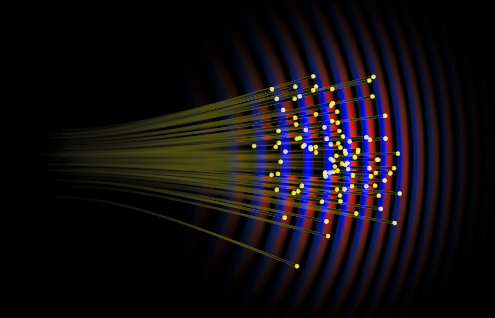

Educational notebook
Bohmian Motion of a Free Particle
A Gaussian wave packet and its Bohmian trajectories.

Wave-packet spreading
A free Gaussian wave packet provides a simple setting for exploring the relationship between density, phase, and Bohmian trajectories. Observe how the Bohmian particle always moves such that its velocity is orthogonal to the phase gradient.
Bohmian trajectories are guided by the local phase gradient.
Many trajectories at once
The initial position of a single bohmian particle is distributed according to the wave function's density. We can visualize many trajectories together to see how they collectively represent the evolving quantum flow.
The ensemble expands with the packet while individual paths display the local quantum flow.
A non-symmetric wave packet
The initial distribution does not have to be a single Gaussian. By starting with two separated peaks, we can see how the paths of the Bohmian particles become much more complex.
The paths of the Bohmian particles lose their simplicity when the initial wave packet is non-symmetric.
Theory & Equations
Free Schrödinger evolution
With no external potential, the wave function obeys the free-particle Schrödinger equation:
A convenient initial state is a Gaussian envelope centered at \(\mathbf{x}_0\), multiplied by a plane-wave phase with mean momentum \(\mathbf{p}_0\):
Spreading
For this Gaussian convention, the characteristic width grows with time according to
The packet center travels with the group velocity \(\mathbf{v}_{\mathrm{g}}=\mathbf{p}_0/m\), while the increasing width represents quantum dispersion.
Bohmian guidance
Writing \(\psi=R e^{iS/\hbar}\), the Bohmian velocity is determined by the local phase gradient:
The density \(|\psi|^2\) describes the distribution of positions, while the phase controls their local velocity. As the free packet spreads, its phase develops the spatial variation that drives neighboring Bohmian trajectories apart.